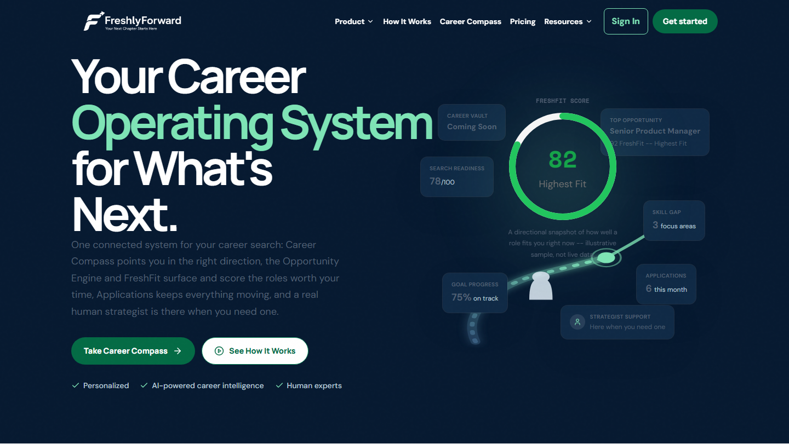
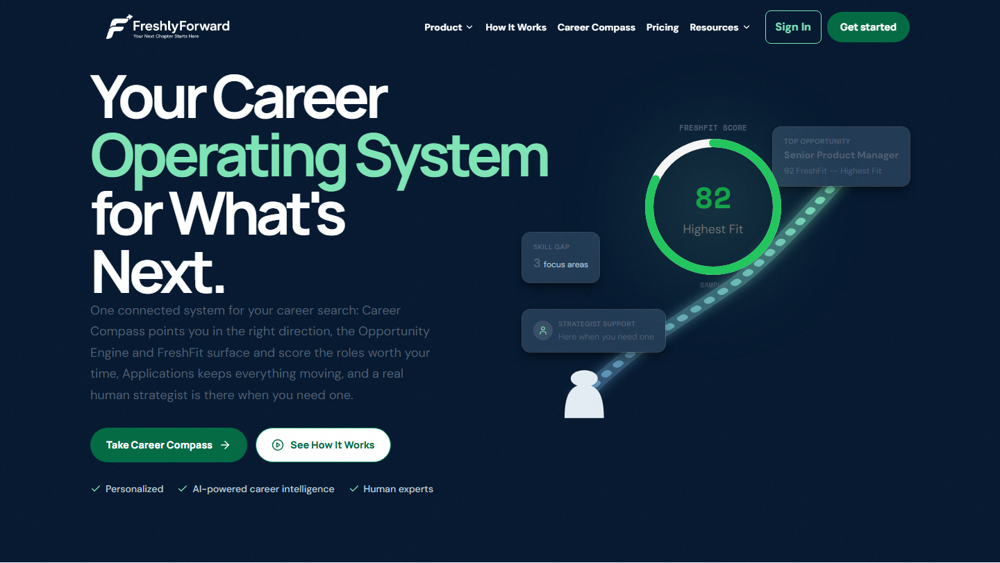
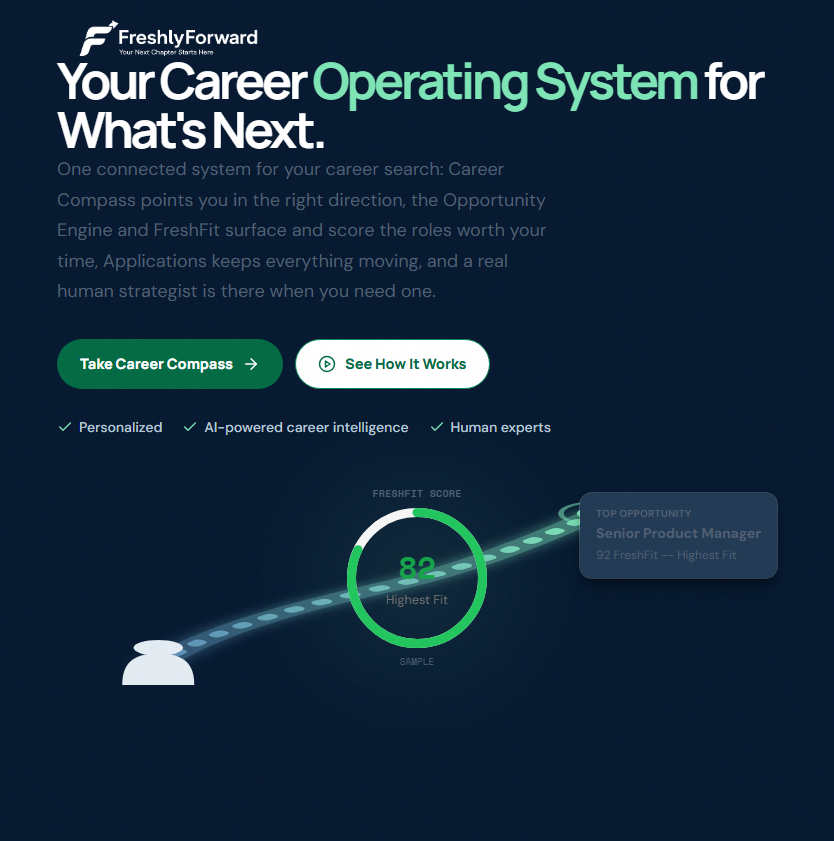

Branch homepage-redesign-phase1 · Scope: hero graphic only, per owner's request. Not pushed yet — awaiting approval.
Before (this session's starting point)

After (this pass)

| Requirement | What changed |
|---|---|
| 1. Immediately understandable | One continuous, bold, high-contrast diagonal path with a clear direction: person (bottom-left) → rises past the ring → arrives at a marked destination node feeding directly into the Top Opportunity card. |
| 2. FreshFit stays centerpiece | Ring untouched (still the largest, brightest element) — only its caption was shortened from a full sentence to a compact "Sample" tag so it stops competing with the path for space. |
| 3. Human figure clarity | Redrawn bigger with a distinct round head + shoulders + body, and literally anchored at the path's start coordinate — no gap, no ambiguity about the connection. |
| 4. Readable path | Stroke width increased, single continuous curve (old branch/loop removed), brighter gradient + glow filter, clear arrowhead + destination ring at the end. |
| 5. Reduce muddiness | Cut from 7 floating cards to 3. Removed Career Vault, Search Readiness, Applications, and Goal Progress — none of which mapped to the requested story elements. |
| 6. Legible supporting cards | Kept exactly 3, each reinforcing the story: Top Opportunity (destination), Skill Gap (focus area), Strategist Support (human backup) — FreshFit itself is the 4th concept via the ring. |
| 7. Contrast & shape clarity | Card background lightened (+8% white via color-mix), ring border strengthened, real drop shadow added — cards now read as distinct floating UI, not background noise. |
| 8. Responsive behavior preserved | Desktop: full composition (ring + path + 3 cards). Tablet: simplified path/figure + ring + Top Opportunity card only (also fixed a pre-existing bug where the ring's "Highest Fit" label was cramped at the old compact size). Mobile: unchanged, text-only hero (already-approved behavior). |
Tablet

Mobile
No horizontal overflow confirmed at either breakpoint. Mobile intentionally keeps the graphic hidden (text + CTAs only) — that behavior predates this pass and was already approved.
The reference's hero graphic is a richer, more illustrated composition than what's implemented here — that gap was already flagged in the prior full-page review and is a separate, bigger scope decision (more assets, more illustration work) than "fix the clarity problem" that was asked for in this pass. What this pass specifically fixes relative to the reference: the reference's hero is immediately legible as person → path → outcome, and the implementation now reads the same way at a glance, even though the reference's illustration style is more elaborate.
Nothing pushed. Full test suite (65 files / 364 tests) and build both pass clean. No changes made outside the hero graphic (HeroCareerPath.tsx, HeroFloatingCard.tsx, HeroFreshFitCenterpiece.tsx, and the hero's floating-card block in LandingPage.tsx only).